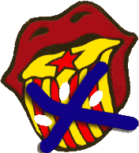

|  | Jornades
per la Llengua 2004 Sant Andreu de Palomar |
|
Manifest
de Correllengua de Sant Andreu de Palomar
Enguany a Sant Andreu de Palomar en comptes d'un Correllengua pròpiament dit, farem unes Jornades per la Llengua. Això és així perquè la CAL no ens deixa fer servir el seu nom ni fer un correllengua amb cara i ulls si no hi ha un nucli de la CAL on es fa el Correllengua. A part, opinen que la càrrega policial de l'any passat va ser "per alguna cosa" i que el fet que l'Assemblea del Correllengua de Sant Andreu no deixés tornar a les JERC ni les deixés entrar en el d'aquest any ( degut a que ERC i JERC sabien del cert que es produïria la càrrega policial ) és sectarisme. A l'actitut de la CAL s'ha de sumar la del 'Districte' Sant Andreu de l'ajuntament de Barcelona que ens ha negat tot els permisos per fer el concert a l'aire lliure, fet que ens ha portat a fer-lo més petit i dins del Casal Popular Miquel Martí i Pol. A més no tenim punt de llum per les activitats que fem durant el dia. L'ajuntament de Barcelona, doncs, ens ha posat les coses més difícils del que eren, com era d'esperar. I esperem que aquest any no hi hagi els mateixos problemes de l'any passat. El Correllengua de Sant Andreu passa per un moment difícil, per això seria molt positiu per aquest i després de tot el que ens han fet que vingués el màxim de gent possible als actes.
|
|
|